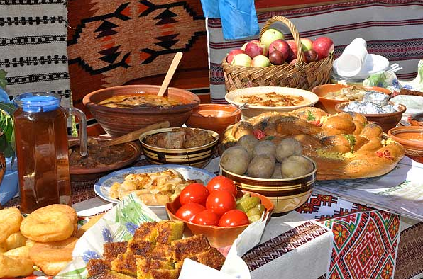

Місцева кухня
Проблем із харчуванням в Івано-Франківську не відчуєте! У центрі багато всіляких кафешок і кіосків, де можна щось перехопити. На центральному ринку продаються сезонні фрукти-овочі та свіжа випічка. Якщо ви приїхали рано-вранці і хочете десь попити кави, то Street Coffee відчиняється о 8 ранку. Компанією можна гарно поїсти в місцевих кафе і ресторанах
Прикарпатська кухня вирізняється простотою страв і водночас їх оригінальністю. Найуживаніші продукти: кукурудзяне борошно й крупа, картопля, квасоля, гриби і, звичайно ж, бринза (бриндза), або "бриндзя", як лагідно називають її самі гуцули.
Бринза — особливий сорт сиру з овечого молока, який готують на полонинах; він не має нічого спільного з тим продуктом, який продають у магазинах з написом "бринза" на етикетці. Проціджене овече молоко заквашують спеціальною закваскою з молока, звурдженого в шлунку ягняти, яке ще не паслося. Чани з молоком ставлять поруч із ватрою та помішують, поки не почнуть з’являтися згустки сиру, які в чані руками зліплюють у більші грудки. Ці грудки сиру потім підвішують у теплому місці чи просто розкладають на сонці. Так виходить „напівфабрикат” бринзи — будз. Після тижневого вигрівання будз перетирають з сіллю і маслом — так отримують бринзу.
Бануш (банош) готують у чавунному казанку на відкритому вогні. У казанок заливають сметану чи вершки і доводять до кипіння, солять, потім дрібною цівочкою сиплють кукурудзяне борошно, постійно помішуючи дерев’яною ложкою, доводять до готовності, поки на поверхню не проступлять крапельки жиру. Готова страва має бути середньої щільності, жовтого кольору і ледь кислувата на смак. Подають зі шкварками, бринзою, грибами.
Грибна юшка — сухі білі гриби відварюють у курячому бульйоні зі спеціями, додають домашню локшину і зелень.
Гуцульський борщ — готують з квашеного буряка та копченої буженини.
Кулеша — кукурудзяна каша, зварена на воді, яку подають з бринзою або топленими шкварками. Може бути зварена з тертою картоплею.
Білі гриби в сметані — гриби ріжуть шматочками, відварюють, обсмажують на маслі, під кінець додають нарізану цибулю, сметану й зелень.
До гуцульської кухні також належать: гуслянка (кисломолочний продукт), вурда (різновид овечого сиру), шупеня (страва з квасолі).
Кулінарні фестивалі

Прикарпаття славиться своїми кулінарними стравами, які туристи можуть спробувати під час різноманітних фестивалів. Ми презентуємо список найцікавіших свят, де ви можете спробувати місцеву кухню
- Медовий Спас - Фестиваль відбувається в Івано-Франківську кожного року 6-7 липня. Цілющу продукцію бджільництва на Прикарпаття привозять пасічники з Хмельницької, Чернівецької областей. Гості свята мають можливість поласувати запашним медом, заготовленим у Коломийському, Тлумацькому, Тисменицькому, Калуському, Косівському, Долинському, Надвірнянському, Городенківському районах.
- Свято баношу - Фестиваль традиційних гуцульських страв "Гуцульський банош" проходить 11 травня в місті Івано-Франківськ. У програмі - запалення ватри, конкурс на приготування найкращого баношу, виставка витворів народних майстрів, дегустація гуцульстких страв та напоїв, виступи творчих колективів, конкурси та розваги.
- Свято винограду та вина - 29-30 серпня в Івано-Франківську відбувається фестиваль «Свято винограду та вина». Основною метою свята є відновлення та популяризація виноградарства на Прикарпатті. У програмі фестивалю дегустація винограду, під час якої дегустаційна комісія визначатить переможців у номінаціях найкрасивіше гроно, найважче гроно та найсмачніший виноград. Під час дегустації аматорських вин дегустаційна комісія визначатиме найкращі зразки серед сухих, напівсолодких та десертних вин. Також гості свята матимуть змогу скуштувати різні сорти винограду, який вирощений на Прикарпатті, смакувати вина виноробів аматорів та відомих торговельних марок України та насолоджуватись карпатськими медами.
Де смачно поїсти

Їжа - це ваше захоплення? Не знаєте, де в Івано-Франківську можна смачно поїсти? Пропонуємо вам місцеві заклади, які увійшли до ТОП-найкращих ресторанів України. Людей найбільше цікавить вміст тарілки, аніж дизайн інтер'єру, де вони харчуються. Але поєднання цих двох компонентів створюють неабияке естетичне задоволення їхніх потреб.
Відомі ресторатори, ресторанні критики та бізнесмени провели моніторинг закладів харчування по всій країні. Головним критерієм відбору була їжа. Таким чином відібрали 100 найкращих ресторанів України.
За версією видання Новое Время обличчям Івано-Франківська стали чотири заклади, а саме: кав'ярня "Говорить Івано-Франківськ", італійський ресторан "Fabbrica", ресторан "Corassini grill&wine", кафе "Manufactura". Заклади дещо відрізняються за своїм форматом, хоча водночас наближені до одного стилю.

Кавярня "Говорить Івано-Франківськ"

Ресторан "Corassini"

Ресторан "Fabbrica"

Кафе "Manufactura"
Випити кави

Добра кава задоволення не з дешевих, особливо для гурманів, які звикли випивати на день не одну чи дві , а щонайменше 4 філіжанки. Ціна цього бадьорого напою коливається в межах 15 гривень. До прикладу у відомій кав’ярні Кімбо звичайне еспресо коштує 12 гривень, американо з молоком 18, латте 19, якщо любите латтте з різними сиропами , медом чи шоколадом доведеться викласти гривень 25. Приблизно така ж шкала цін і у «Вальяжі». В "Надії" чи молодіжному "Гармидері" вартість, до прикладу, американо з молоком трохи нижча, по 12 гривень. Добряче потрусити гаманцем доведеться кавоманам в Домі Кави. Там сортів кави найбільше, тож і ціна найвища, максимальна ціна еспресо сягає 26 гривень.
Все залежить від сорту кави та різноманітних добавок. Середня ціна улюбленого жінками латте тут коливається у межах 22 гривень. Як правило, в Домі кави використовують торгову марку Блазер , а найпопулярнішим сортом кави є сорт балерина. В Кімбо кава одноіменної марки, та два улюблені івано-франківцями сорти-" кремо-кафе", і "аромо-дінаполі". Крім того у цій кав’ярні варять і справжнє запашне какао. Досить модними зараз є кавові малюнки. У "Кімбо" вас потішать сердечками чи листочками, в "Надії"- смайликами.
Загалом малювати на кавовій піні можна все, чим багата фантазія та вправні руки. Як правило такі малюнки у місцевих кафе роблять із кориці та шоколаду. Ще один цікавий нюанс. Серед кав’ярень практично лише "Кімбо" та "Дім Кави" улюблений напій готують на очах в клієнта. Ці заклади обладнані відповідними кавоварками, в які засипають зерна та мелять при замовленні. Це,за словами фахівців, додає каві особливого аромату.